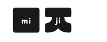

A community-driven crowdfunding platform for local improvement projects.
Community Change is a community-driven crowdfunding platform that enables residents to fund small local improvement projects in their neighbourhood. Rather than waiting for council action, users can create fundraisers and collect pledges to support initiatives such as community murals, library resources, youth programs, park upgrades, and other local projects.
This was the first full stack application I developed from scratch as part of the She Codes Plus Program. We were given the freedom to create any type of fundraising platform, and I chose to focus on empowering local communities to create positive change in their own neighbourhoods.
Building Community Change introduced me to full stack development and gave me a practical understanding of how frontend and backend systems work together.
Thank you to Christina Huynh for the banner artwork, and to Google for the fundraiser card images used throughout the project.